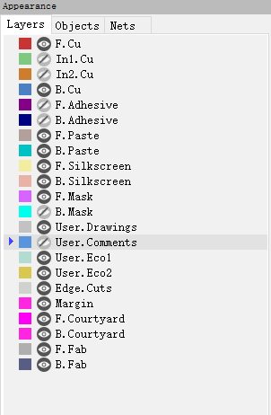
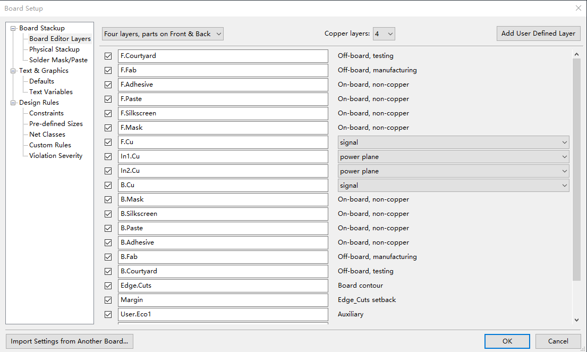
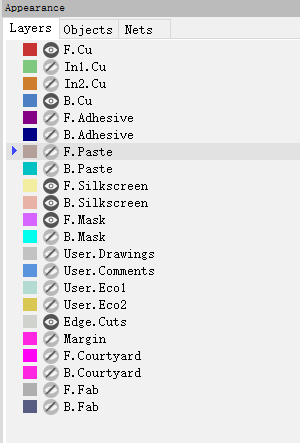
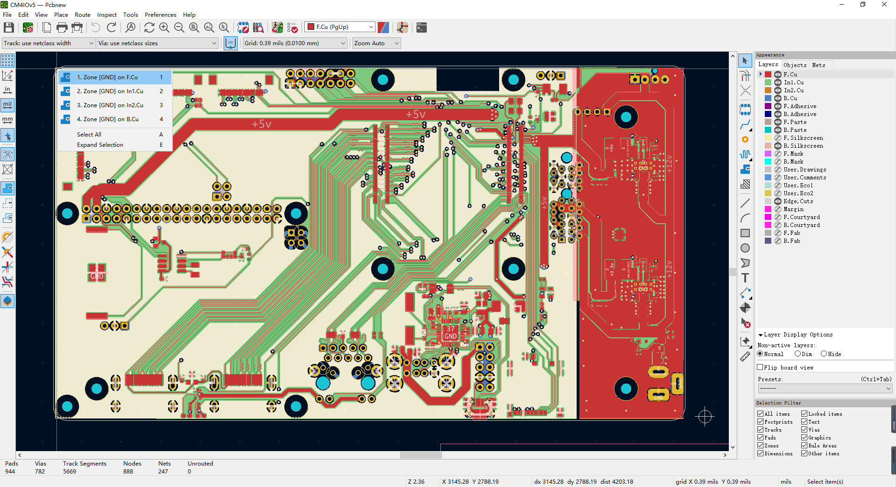
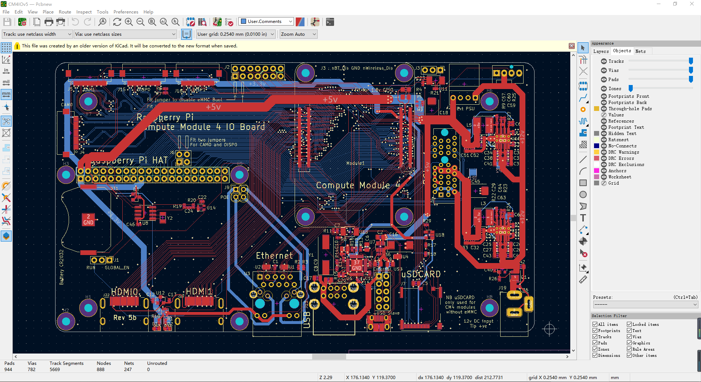
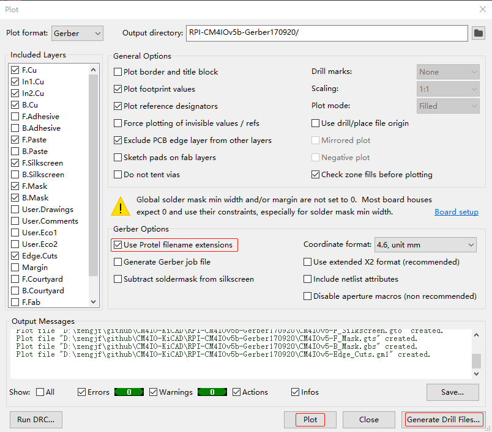
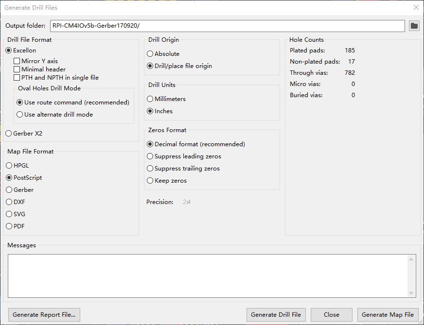

KiCad
KiCad基本原理图、PCB使用方法，便于分析CM4 io板，树莓派自身也可以运行KiCad，但版本是5不是6
参考文档
原理图
这部分和其他的工具软件差异不大
PCB图层

查看板层
[File] -> [Board Setup] -> [Board Editor Layers] -> [Copper layers] -> 4

布线层
铜层是用于放置和重新布置导线的工作层。 层号从0开始（第一个铜层，在上层，即F.Cu），并以31（最后一个铜层，在下层，即B.Cu）结束。 由于元件不能放置在内层（层1到层30）中，所以只有层0（F.Cu）和层31（B.Cu）是元件层。
任何铜层的名字都是可以编辑的。层0的默认名称为F.Cu，层31的默认名称为B.Cu。当电路板是2层板时，层0和层31之间没有其他的铜层。当电路板是4层板时，层0和层31中间多了两个铜层，名称按从上层到下层的顺序依次为In1.Cu和In2.Cu。当电路板是6层板时，层0和层31中间多了四个铜层，名称按从上层到下层的顺序依次为In1.Cu，In2.Cu，In3.Cu和In4.Cu。
通常，电路板是4层时，采用如下结构：
F.Cu ====Signal
In1.Cu ====GND Plane
In2.Cu ====VCC Plane
B.Cu ====Signal
技术层对
KiCad中12个技术层总是成对出现的：上层一个，下层一个。可以通过F.或者B.来区分它们的位置。KiCad中的6个技术层对分别为：
Adhesive (F.Adhes and B.Adhes)粘合层：用于在波峰焊前将SMD元件的粘合剂粘贴到电路板上的粘合层；
Solder Paste (F.Paste and B.Paste)焊膏层：用于在回流焊接之前生产掩模以允许焊膏放置在SMD元件的焊盘上。通常这些层只有表面安装元件的焊盘；
Silk Screen (F.SilkS and B.SilkS)丝印层：它们是元件的图样出现的层，也就是你画的东西，用于辅助元件的安装。如元件极性，第一针脚，安装参考图等等；
Solder Mask (F.Mask and B.Mask)阻焊层：这两个层定义了焊接的掩模，也就是不过绿油的区域。所有焊盘都要出现在这两个层的其中一个层（SMD元件）或者所有两个层（通孔元件）以防止焊盘被过油，影响导电；
Courtyard (F.CrtYd and B.CrtYd)空间层：用于显示元件在PCB上实际占用的空间大小；
Fabrication (F.Fab and B.Fab)生产层：用于辅助元件贴装；
独立技术层
Edge.Cuts边界层：用于绘制电路板轮廓。 放置在此层上的任何元素（图形，文本…）都显示在所有其他图层上。所以请仅使用此图层绘制PCB的轮廓；
Margin边界层（目前没发现有什么特别的用处）；
通用层
这些层可以任意使用。 它们可以是组装或布线等的说明文本，也可以是组装或加工的构造图。 它们的名字是：Comments，E.C.O. 1，E.C.O. 2，Drawings
4层板分析需要的层

查看铺铜
点击这种网格会出现铺铜图层信息，就可以查看铺铜范围，好像在KiCad中一般先铺铜，然后布线，可以通过这种方式选择，然后删除铺铜；
话说以前我自己画的板子，都是低频板，连铺铜都免了；
如下图我们可知，同一个层，有两个铺地，假装是：数字地、模拟地；

隐藏铺铜
可以打开In1.Cu、In2.Cu，可以查看这两层的一些布线信息

测量单位
[View] -> [Units]
生成 Gerber 文件
参考：getting_started_in_kicad.pdf
5.2 生成 Gerber 文件
这些是制作典型的 2 层 PCB 时需要选择的层：
层 |
KiCad 层名 |
默认 Gerber 扩展 |
“使用 Protel 文件扩展 名”已启用 |
|---|---|---|---|
Bottom Layer（底层） |
B.Cu（底层） |
.GBR |
.GBL |
Top Layer（顶层） |
F.Cu（顶层） |
.GBR |
.GTL |
Top Overlay（顶层丝印层） |
F.SilkS（顶层丝印层） |
.GBR |
.GTO |
Bottom Solder Resist（底层阻焊层） |
B.Mask（底层阻焊层） |
.GBR |
.GBS |
Top Solder Resist（顶层阻焊层） |
F.Mask（顶层阻焊层） |
.GBR |
.GTS |
Edges（边缘（板框）层） |
Edge.Cuts（边缘（板框）层） |
.GBR |
.GM1 |
[File] -> [Fabrication Outputs] -> [Gerbers]

生成Drill文件
[File] -> [Fabrication Outputs] -> [Drill Files]

树莓派安装KiCad
apt-cache search kicad
horizon-eda - EDA layout and schematic application kicad - Electronic schematic and PCB design software kicad-common - Old common files used by kicad - Transitional Package kicad-demos - Demo projects for kicad kicad-doc-ca - Kicad help files (Catalan) kicad-doc-nl - Kicad help files (Dutch) kicad-footprints - Footprint symbols for KiCad's Pcbnew kicad-libraries - Virtual package providing common used libraries by kicad kicad-packages3d - 3D models for 3D viewer in KiCad's Pcbnew and Footprint Editor kicad-symbols - Schematic symbols for KiCad's Eeschema kicad-templates - Project templates for KiCad pcb-rnd - Modular Printed Circuit Board layout tool kicad-dbgsym - debug symbols for kicad kicad-doc-de - Kicad help files (German) kicad-doc-en - Kicad help files (English) kicad-doc-es - Kicad help files (Spanish) kicad-doc-fr - Kicad help files (French) kicad-doc-id - Kicad help files (Indonesian) kicad-doc-it - Kicad help files (Italian) kicad-doc-ja - Kicad help files (Japanese) kicad-doc-pl - Kicad help files (Polish) kicad-doc-ru - Kicad help files (Russian) kicad-doc-zh - Kicad help files (Chinese)
未尝试，因为目前的版本5打不开CM4的工程，CM4用的是版本6的